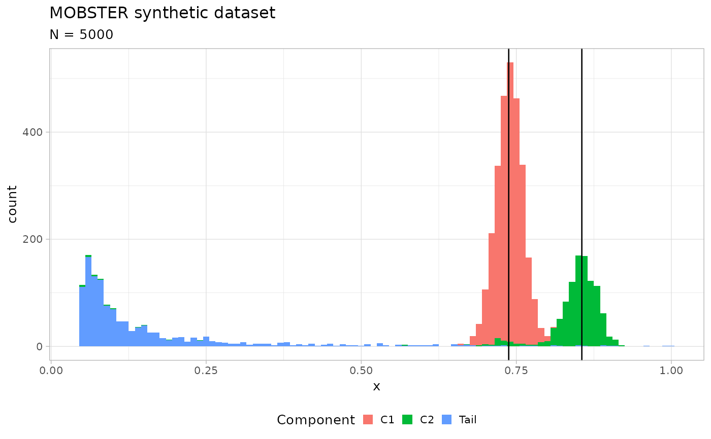

Generate a random MOBSTER model, its data and creates a plot for it.
Arguments
- N
Number of samples to generate (mutations).
- K_betas
Number of Beta components (subclones).
- pi_tail_bounds
2D vector with min and max size of the tail's mutations (proportions).
- pi_min
Minimum mixing proportion for every component.
- Betas_separation
Minimum separation between the means of the Beta components.
- Beta_variance_scaling
The variance of the Beta is generated as U[0,1] and scaled by this value. Values on the order of 1000 give low variance, 100 represents a dataset with quite some dispersion ( compared to a putative Binomial generative model).
- Beta_bounds
Range of values to sample the Beta means.
- shape_bounds
Range of values to sample the tail shape, default [1, 3],
- scale
Tail scale, default 0.05.
- seed
The seed to fix the process, default is 123.
Examples
x = random_dataset()
print(x)
#> $data
#> # A tibble: 5,000 × 2
#> VAF simulated_cluster
#> <dbl> <chr>
#> 1 0.694 C1
#> 2 0.726 C1
#> 3 0.731 C1
#> 4 0.741 C1
#> 5 0.769 C1
#> 6 0.736 C1
#> 7 0.737 C1
#> 8 0.748 C1
#> 9 0.749 C1
#> 10 0.731 C1
#> # ℹ 4,990 more rows
#>
#> $model
#> $model$a
#> C1 C2
#> 299.9128 180.8119
#>
#> $model$b
#> C1 C2
#> 106.60420 30.50675
#>
#> $model$shape
#> [1] 1
#>
#> $model$scale
#> [1] 0.05
#>
#> $model$pi
#> Tail C1 C2
#> 0.2421595 0.5493651 0.2084753
#>
#>
#> $plot

#>